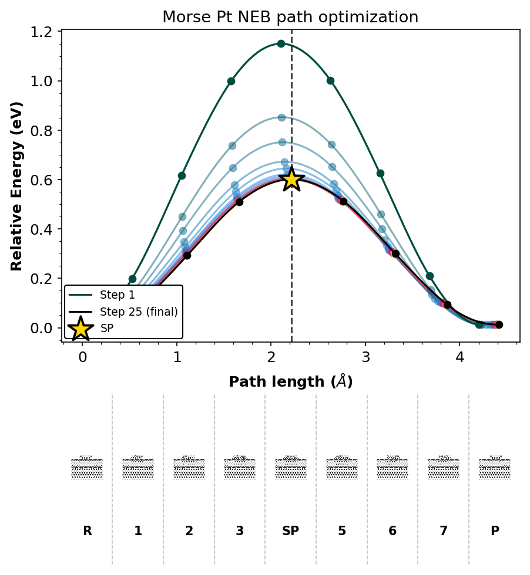

Morse Pt NEB (built-in potential)¶
A compact Pt surface / adatom NEB using the built-in morse_pt potential.
Geometries match benchmarks/data/neb_morse_pt/. The system is small, uses only
a built-in potential, and is suitable for docs CI.
Workflow:
write
config.iniand copy endpointsrun
eonclientplot 1D profiles and a 2D reaction-valley landscape with the current
rgpycrumbs eon plt-nebconventions (full history, 1:1 Å panel, structure strip)
Prerequisites¶
which eonclient
python -c "import rgpycrumbs, chemparseplot, readcon"
Setup and run¶
1D energy profiles (full history)¶
Plot every optimization step, mark the final band, and attach a structure
strip for all images on the path (--plot-structures all). The saddle is
marked with a gold star on the final profile.
neb_profile = plot_dir / "neb_1d.png"
run_rgpycrumbs(
"eon",
"plt-neb",
"--con-file",
str(work / "neb.con"),
"--input-dat-pattern",
str(work / "neb_*.dat"),
"--plot-type",
"profile",
"--highlight-last",
"--show-pts",
"--plot-structures",
"all",
"--strip-renderer",
"xyzrender",
"--strip-dividers",
"--xyzrender-config",
"paton",
"--rotation",
"90x,0y,0z",
"--show-legend",
"--title",
"Morse Pt NEB path optimization",
"--dpi",
"150",
"--output-file",
str(neb_profile),
cwd=work,
)
show_plot(neb_profile)
$ /home/runner/work/eOn/eOn/.pixi/envs/docs-mta/bin/python3.12 -m rgpycrumbs.cli eon plt-neb --con-file /tmp/eon_morse_pt_neb_eee08re8/neb.con --input-dat-pattern /tmp/eon_morse_pt_neb_eee08re8/neb_*.dat --plot-type profile --highlight-last --show-pts --plot-structures all --strip-renderer xyzrender --strip-dividers --xyzrender-config paton --rotation 90x,0y,0z --show-legend --title Morse Pt NEB path optimization --dpi 150 --output-file /tmp/eon_morse_pt_neb_eee08re8/plots/neb_1d.png
--> Dispatching to: /home/runner/work/eOn/eOn/.pixi/envs/docs-mta/bin/python3.12 /home/runner/work/eOn/eOn/.pixi/envs/docs-mta/lib/python3.12/site-packages/rgpycrumbs/eon/plt_neb.py --con-file /tmp/eon_morse_pt_neb_eee08re8/neb.con --input-dat-pattern /tmp/eon_morse_pt_neb_eee08re8/neb_*.dat --plot-type profile --highlight-last --show-pts --plot-structures all --strip-renderer xyzrender --strip-dividers --xyzrender-config paton --rotation 90x,0y,0z --show-legend --title Morse Pt NEB path optimization --dpi 150 --output-file /tmp/eon_morse_pt_neb_eee08re8/plots/neb_1d.png
[08/16/26 01:02:55] INFO INFO - Setting global rcParams for ruhi theme
WARNING WARNING - Font 'Atkinson Hyperlegible' not found.
Falling back to 'sans-serif'.
INFO INFO - Reading structures from
/tmp/eon_morse_pt_neb_eee08re8/neb.con
INFO INFO - Loaded 9 structures.
INFO INFO - Loading explicit saddle point from sp.con
[08/16/26 01:02:59] INFO INFO - Searching for files with pattern:
'/tmp/eon_morse_pt_neb_eee08re8/neb_*.dat'
INFO INFO - Found 25 file(s).
INFO INFO - rgpycrumbs: installing xyzrender>=0.1.3 via
uv
[08/16/26 01:03:03] INFO INFO - Loading /tmp/tmp6l4p2061.xyz
INFO INFO - Built graph: 343 atoms, 1626 bonds
[08/16/26 01:03:05] INFO INFO - Loading /tmp/tmpmvuo171l.xyz
INFO INFO - Built graph: 343 atoms, 1626 bonds
[08/16/26 01:03:06] INFO INFO - Loading /tmp/tmp3a3l04dc.xyz
INFO INFO - Built graph: 343 atoms, 1626 bonds
[08/16/26 01:03:07] INFO INFO - Loading /tmp/tmpx9kpk_5r.xyz
[08/16/26 01:03:08] INFO INFO - Built graph: 343 atoms, 1628 bonds
[08/16/26 01:03:09] INFO INFO - Loading /tmp/tmp2of56b5g.xyz
INFO INFO - Built graph: 343 atoms, 1629 bonds
[08/16/26 01:03:10] INFO INFO - Loading /tmp/tmpz_nh6v65.xyz
INFO INFO - Built graph: 343 atoms, 1628 bonds
[08/16/26 01:03:12] INFO INFO - Loading /tmp/tmpmh1d42b3.xyz
INFO INFO - Built graph: 343 atoms, 1626 bonds
[08/16/26 01:03:13] INFO INFO - Loading /tmp/tmpqe45ivqj.xyz
INFO INFO - Built graph: 343 atoms, 1626 bonds
[08/16/26 01:03:14] INFO INFO - Loading /tmp/tmprgsch7ax.xyz
[08/16/26 01:03:15] INFO INFO - Built graph: 343 atoms, 1626 bonds
[08/16/26 01:03:16] INFO INFO - Profile content layout: main=3.55 in,
strip=1.95 in, figsize=(6.40, 6.91)
--> Using active interpreter (readcon/plot stack present or --dev)

2D reaction-valley landscape¶
Use the full optimization history for the surface (--landscape-path all),
project into progress / orthogonal deviation (--project-path), and keep a
true 1:1 Å panel (Δs = Δd). The strip under the map shows every band image
in two rows when there are many structures.
neb_land = plot_dir / "neb_2d.png"
run_rgpycrumbs(
"eon",
"plt-neb",
"--con-file",
str(work / "neb.con"),
"--input-dat-pattern",
str(work / "neb_*.dat"),
"--input-path-pattern",
str(work / "neb_path_*.con"),
"--plot-type",
"landscape",
"--rc-mode",
"path",
"--landscape-mode",
"surface",
"--landscape-path",
"all",
"--surface-type",
"grad_imq",
"--project-path",
"--show-pts",
"--highlight-last",
"--plot-structures",
"all",
"--strip-renderer",
"xyzrender",
"--strip-dividers",
"--xyzrender-config",
"paton",
"--rotation",
"90x,0y,0z",
"--show-legend",
"--title",
"Morse Pt NEB-RMSD surface",
"--dpi",
"150",
"--output-file",
str(neb_land),
cwd=work,
)
show_plot(neb_land)
$ /home/runner/work/eOn/eOn/.pixi/envs/docs-mta/bin/python3.12 -m rgpycrumbs.cli eon plt-neb --con-file /tmp/eon_morse_pt_neb_eee08re8/neb.con --input-dat-pattern /tmp/eon_morse_pt_neb_eee08re8/neb_*.dat --input-path-pattern /tmp/eon_morse_pt_neb_eee08re8/neb_path_*.con --plot-type landscape --rc-mode path --landscape-mode surface --landscape-path all --surface-type grad_imq --project-path --show-pts --highlight-last --plot-structures all --strip-renderer xyzrender --strip-dividers --xyzrender-config paton --rotation 90x,0y,0z --show-legend --title Morse Pt NEB-RMSD surface --dpi 150 --output-file /tmp/eon_morse_pt_neb_eee08re8/plots/neb_2d.png
---------------------------------------------------------------------------
KeyboardInterrupt Traceback (most recent call last)
Cell In[3], line 2
1 neb_land = plot_dir / "neb_2d.png"
----> 2 run_rgpycrumbs(
3 "eon",
4 "plt-neb",
5 "--con-file",
6 str(work / "neb.con"),
7 "--input-dat-pattern",
8 str(work / "neb_*.dat"),
9 "--input-path-pattern",
10 str(work / "neb_path_*.con"),
11 "--plot-type",
12 "landscape",
13 "--rc-mode",
14 "path",
15 "--landscape-mode",
16 "surface",
17 "--landscape-path",
18 "all",
19 "--surface-type",
20 "grad_imq",
21 "--project-path",
22 "--show-pts",
23 "--highlight-last",
24 "--plot-structures",
25 "all",
26 "--strip-renderer",
27 "xyzrender",
28 "--strip-dividers",
29 "--xyzrender-config",
30 "paton",
31 "--rotation",
32 "90x,0y,0z",
33 "--show-legend",
34 "--title",
35 "Morse Pt NEB-RMSD surface",
36 "--dpi",
37 "150",
38 "--output-file",
39 str(neb_land),
40 cwd=work,
41 )
42 show_plot(neb_land)
Cell In[1], line 67, in run_rgpycrumbs(cwd, timeout, *args)
65 cmd = [sys.executable, "-m", "rgpycrumbs.cli", *args]
66 print("$", " ".join(cmd))
---> 67 r = subprocess.run(cmd, cwd=cwd, capture_output=True, text=True, timeout=timeout)
68 if r.stdout:
69 print(r.stdout)
File ~/work/eOn/eOn/.pixi/envs/docs-mta/lib/python3.12/subprocess.py:550, in run(input, capture_output, timeout, check, *popenargs, **kwargs)
548 with Popen(*popenargs, **kwargs) as process:
549 try:
--> 550 stdout, stderr = process.communicate(input, timeout=timeout)
551 except TimeoutExpired as exc:
552 process.kill()
File ~/work/eOn/eOn/.pixi/envs/docs-mta/lib/python3.12/subprocess.py:1209, in Popen.communicate(self, input, timeout)
1206 endtime = None
1208 try:
-> 1209 stdout, stderr = self._communicate(input, endtime, timeout)
1210 except KeyboardInterrupt:
1211 # https://bugs.python.org/issue25942
1212 # See the detailed comment in .wait().
1213 if timeout is not None:
File ~/work/eOn/eOn/.pixi/envs/docs-mta/lib/python3.12/subprocess.py:2115, in Popen._communicate(self, input, endtime, orig_timeout)
2108 self._check_timeout(endtime, orig_timeout,
2109 stdout, stderr,
2110 skip_check_and_raise=True)
2111 raise RuntimeError( # Impossible :)
2112 '_check_timeout(..., skip_check_and_raise=True) '
2113 'failed to raise TimeoutExpired.')
-> 2115 ready = selector.select(timeout)
2116 self._check_timeout(endtime, orig_timeout, stdout, stderr)
2118 # XXX Rewrite these to use non-blocking I/O on the file
2119 # objects; they are no longer using C stdio!
File ~/work/eOn/eOn/.pixi/envs/docs-mta/lib/python3.12/selectors.py:415, in _PollLikeSelector.select(self, timeout)
413 ready = []
414 try:
--> 415 fd_event_list = self._selector.poll(timeout)
416 except InterruptedError:
417 return ready
KeyboardInterrupt:
See also¶
Visualizing optimization trajectories: PET-MAD / vinyl alcohol visualization walkthrough
Nudged elastic band: NEB parameters
atomistic-cookbook eon-pet-neb: metatomic oxadiazole NEB with the same plot stack